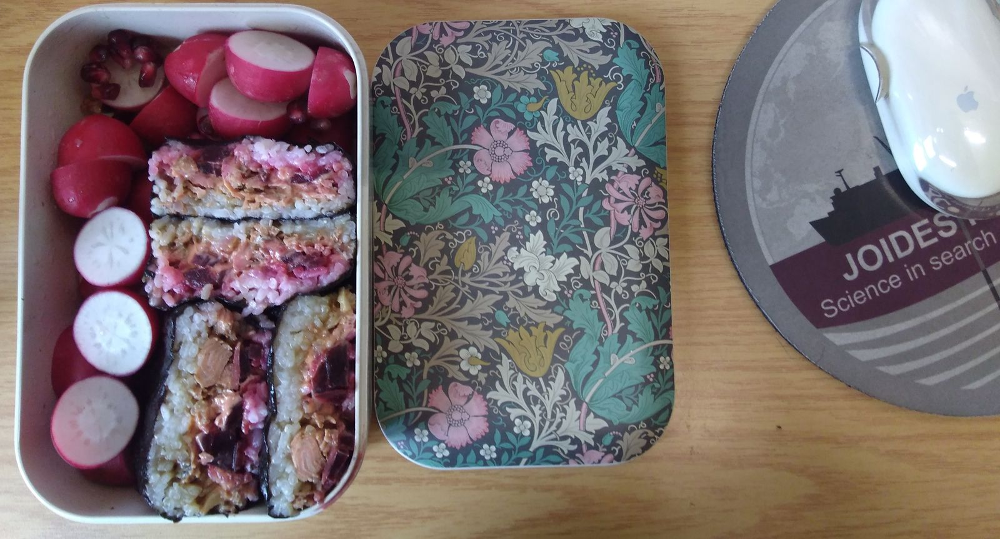

A little bit of everything
2020-09-27
Since a few months, I felt the need to create a blog. I have literally no idea why. Nor have I any idea of what I will put in it, though if I had to guess I would say a little bit of science — most probably the day-to-day somewhat boring details of it —, a little bit of programming — I have been contributing to StackOverflow for years, and I have been helping my colleagues a lot with their programming, but this way I might actually talk about the issues I want to talk about and not the ones I am asked about —, a little bit of cooking — as it is a significant part of my life and the one that is the easiest to talk about and the most likely to actually interest someone else than myself :) — and maybe a little bit about other subjects that interest me – literature, board games, mythology, ...
So stay tuned for a little bit of everything I guess.

A little bit of everything: actinommid radiolarians from site 846B; my first attempt at making Onigirazu from before the pandemic; some of my code (here Python).